News for 2016
2019 2018 2017 2015 2014 2013 2012 2011 2010 2009 2008
________________________________________________
As of December 2016 the website is at https://steveslawn.ga/ryepark/
Try going to steveslawn.ga to see the suitably amateurish-looking page that gives details of my gardening business
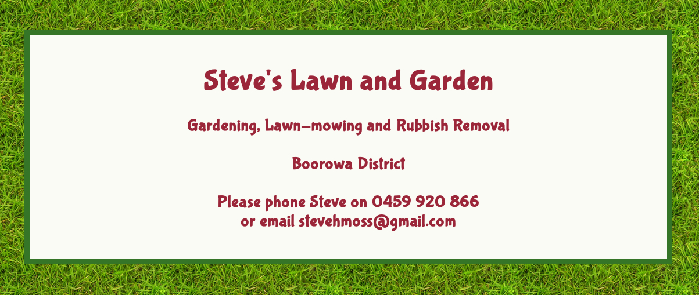
________________________________________________
Kitchen Number 5
August 30, 2016
Version One: Prehistoric till early 2008. South end of back verandah 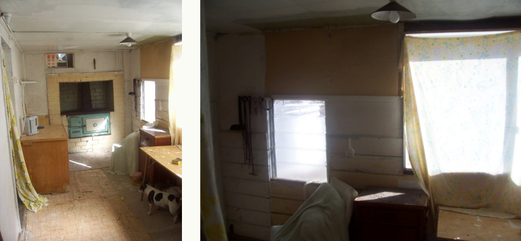Version Two: 2008 - 2012. North end of back verandah 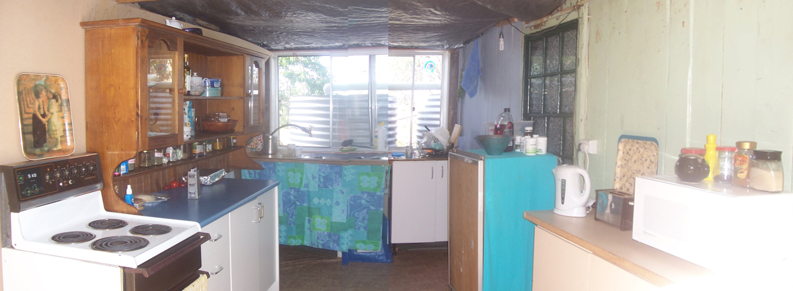
Version Three: 2012 - late-2014. Moved into dining room to allow demolition of Back verandah and construction of new rear of house. 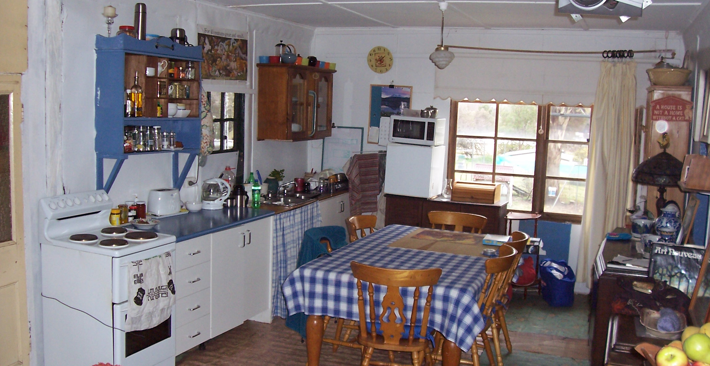
Version Four: 2014 - now (Aug 2016). Trial occupancy of final kitchen space 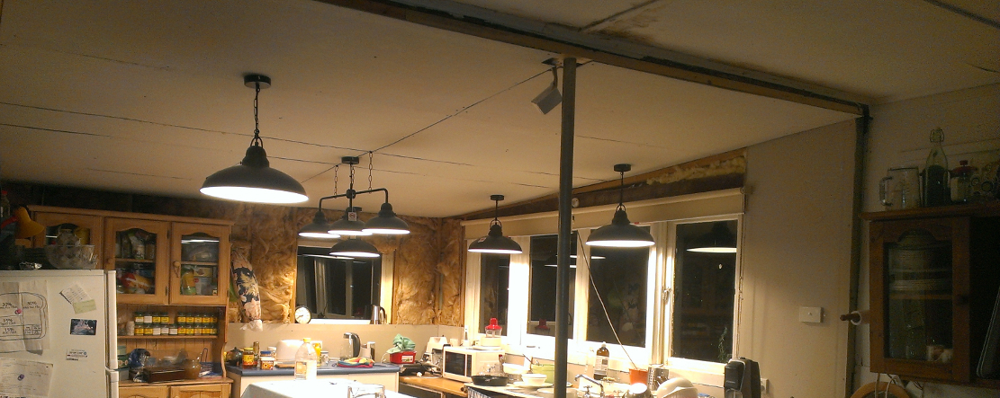
Version Five: Now till post-history. Back into the dining room to allow a brand new permanent kitchen to go in! 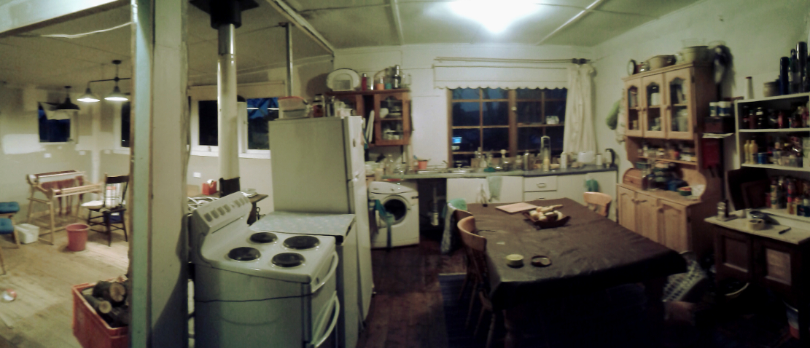
________________________________________________
A very tiring first Year!
June 13, 2016
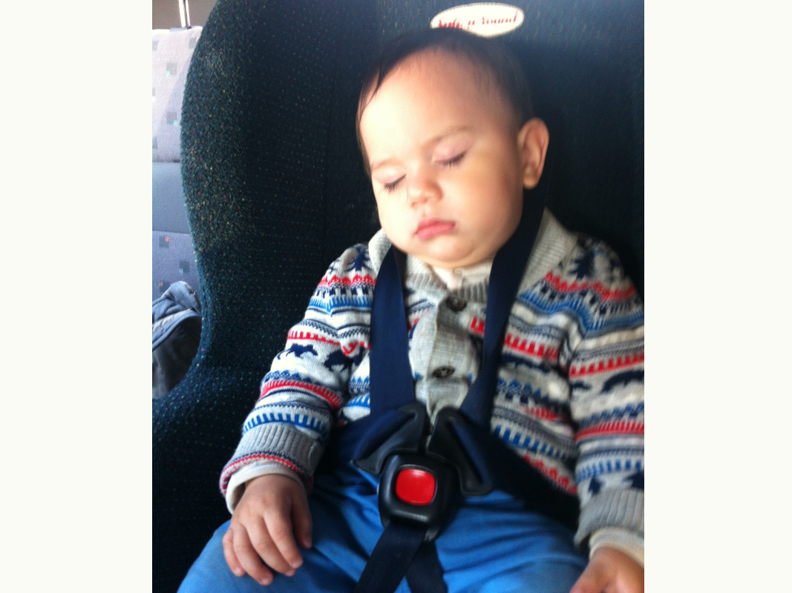See the slide-show of Tainn's first year here.
________________________________________________
Sally and Pixel
May 26, 2016
These are our 2 new dogs, acquired through a rescue organisation: 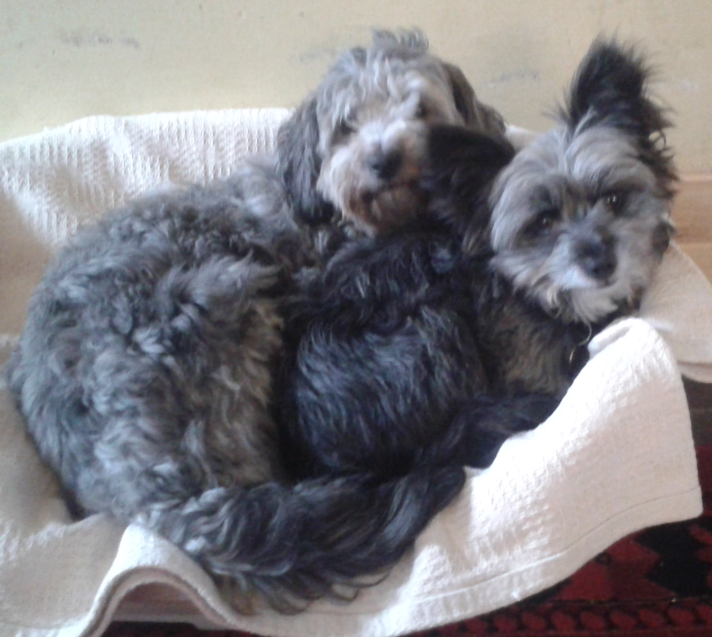________________________________________________
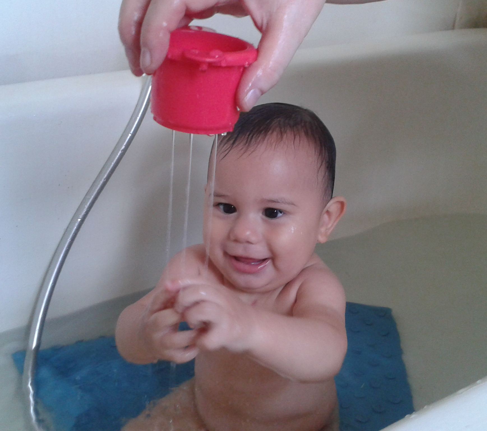Tainn!
October 1, 2016
Kate and Tainn arrived here this afternoon after a morning arrival in Sydney: 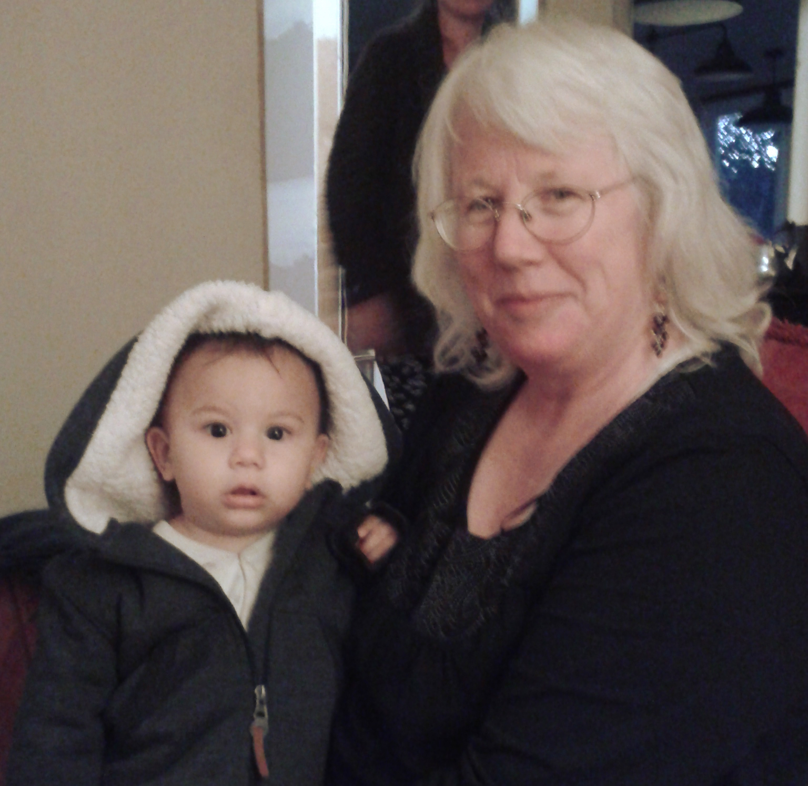Kate decided to come to Oz for just a month after it was taking too long to get a visa for Erick. Hopefully they'll all be coming for a longer stay later in the year.
________________________________________________
Fortifications Nearing Completion
May 13, 2016
Kate and Tainn arriving tomorrow from Guatemala: 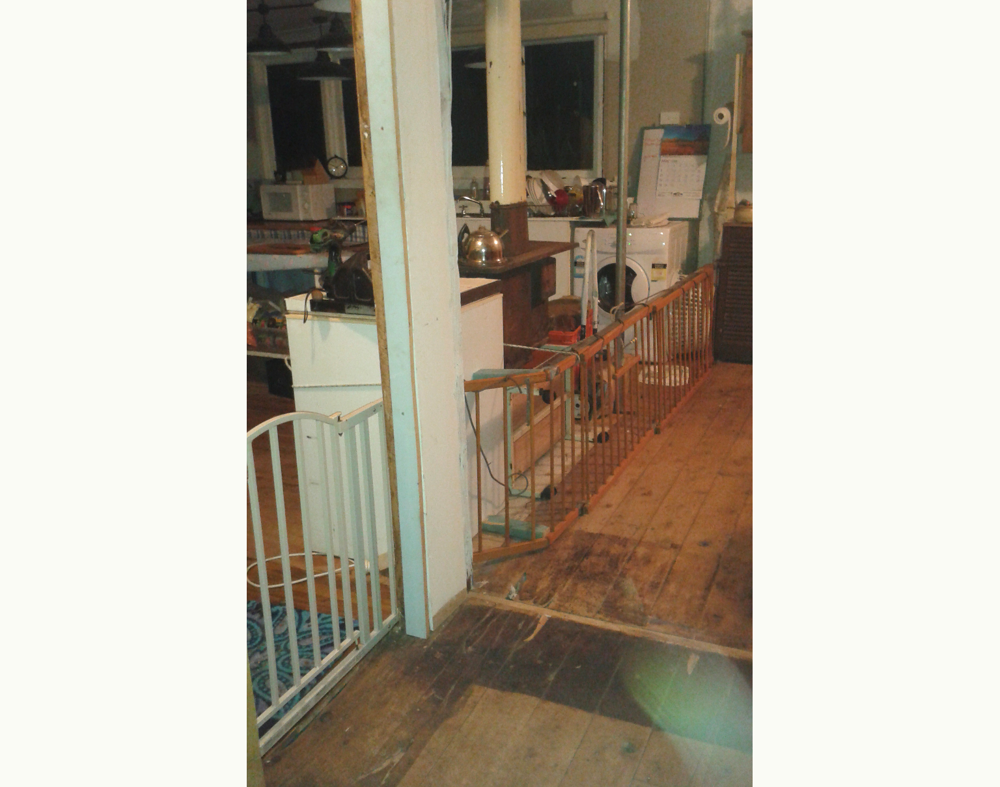Was that a stove with a flue attached you saw in the background? It's finally been installed! 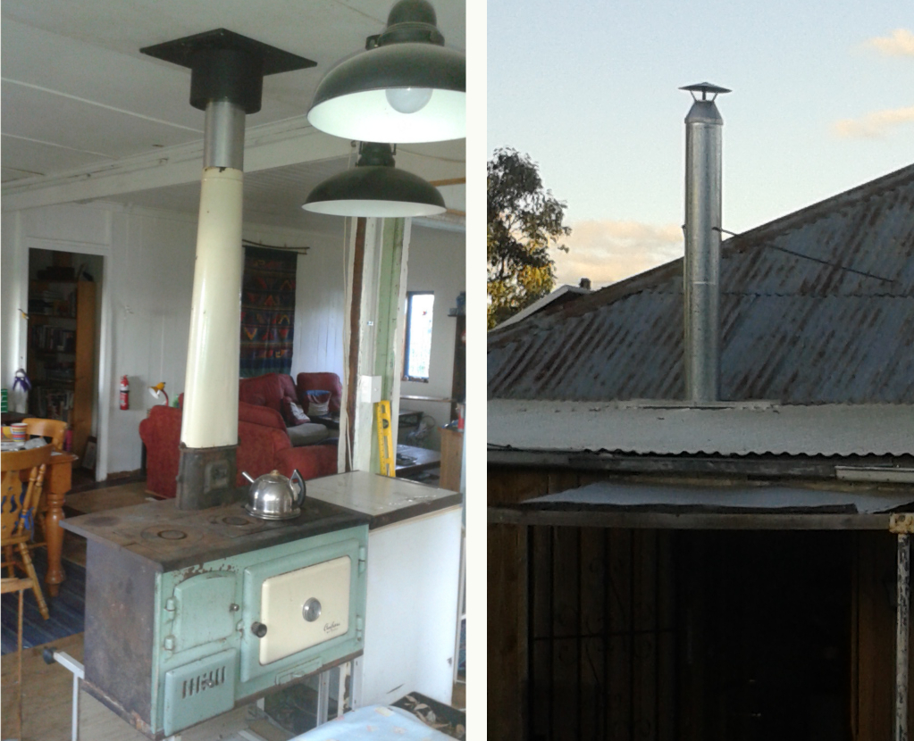
It's even got a hole in the top for letting the smoke out.
________________________________________________
Welcome All Aliens!
May 2, 2016
I've been working on a good location map for the cabin to put on the "Getting There" page for the Wallaga cabin. I wasn't sure how far afield to give directions from...
A long time since posting any news here but things have been hapenning all the same. We've had power and plumbing connected to the cabin on our block at home, and the front spare room is lined and painted: 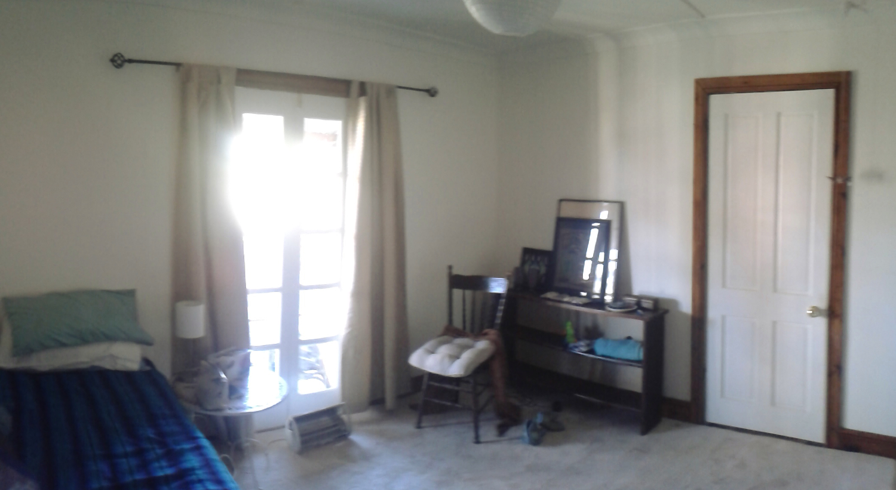
But the biggest news is what a fantastic weekend was had at Wallaga Lake by a pack of Mosses rarely seen in the wild: 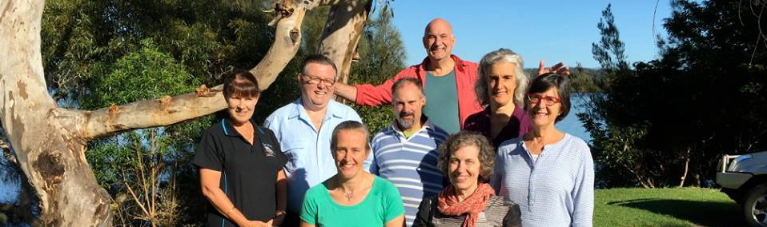
They've even got their own page on this site!
________________________________________________
New Hall Wall
January 5, 2015
Happy New Year to all! We had a quiet Christmas and New Year, And I had a very pleasant birthday yesterday with visit from Mum and Dad, and a little bit of rain (and more today).Work on the house moved a little faster in December with the help of Gene Pearsall, a local handyman, who will definitely be back for more work in January. We built this wall between the kitchen and hall, and now the lining is all up in the kitchen and front bedroom so all that's needed is the plastering: 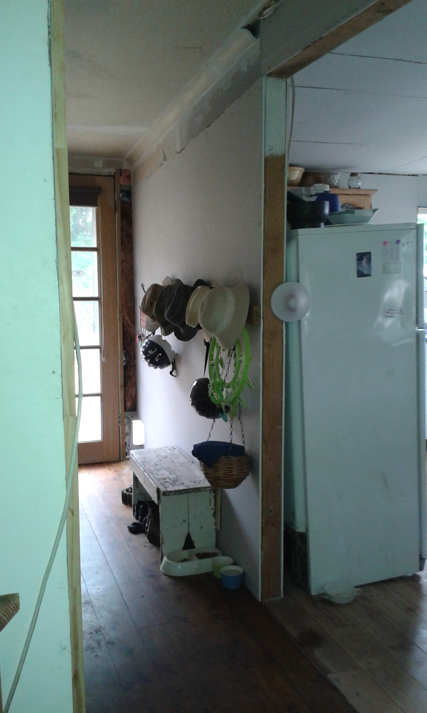